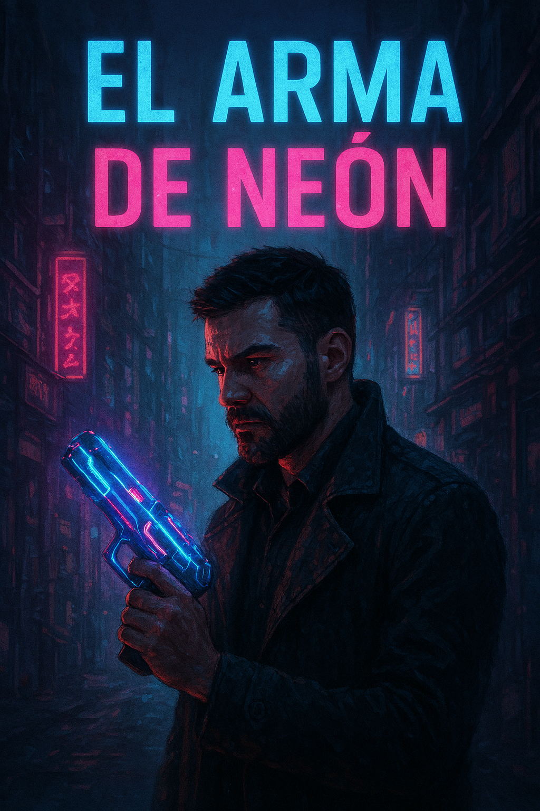
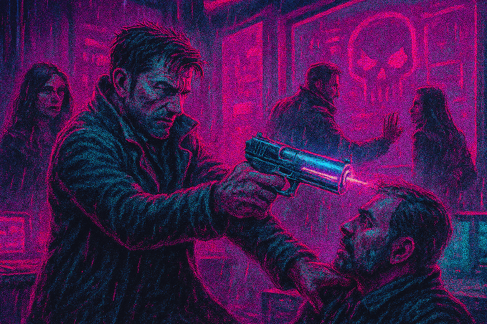
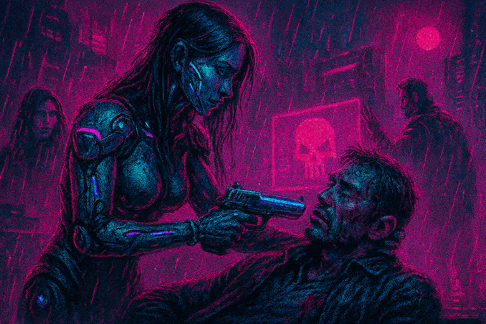
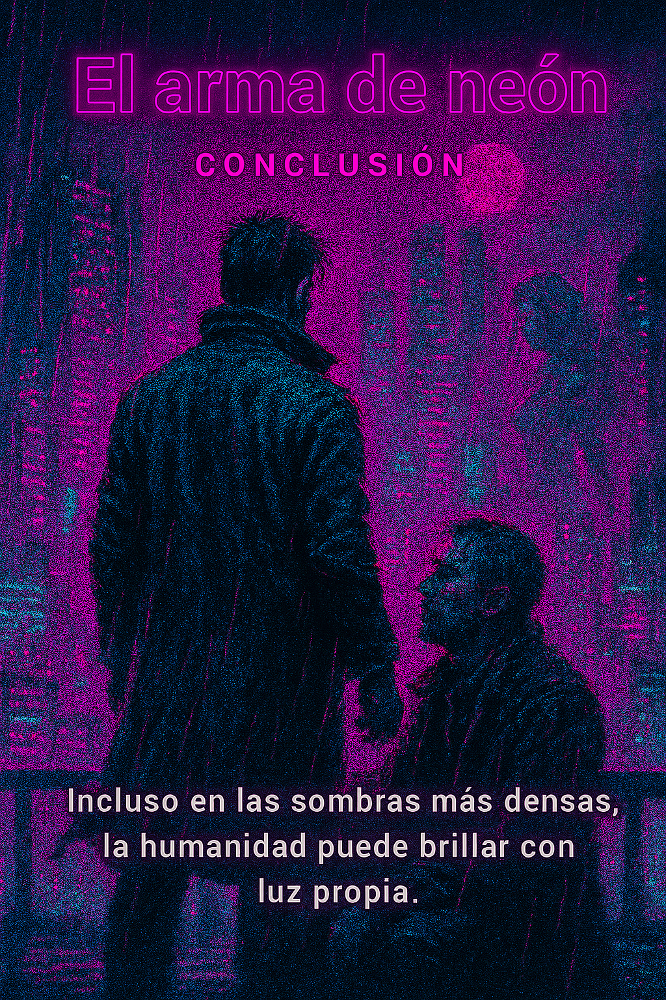

Una historia de Blade Runner
Por: Daniel Santana Bueno
Lema: En un mundo donde los recuerdos se fabrican y la humanidad se cuestiona, solo los que sueñan con
libertad desafían la oscuridad.
En esta historia alternativa de Blade Runner, seguimos a Dani, un detective
en una ciudad futurista plagada de corrupción y crimen. Dani recibe un caso
que lo llevará a enfrentarse a la peligrosa banda que utiliza el arma de neón.
A medida que avanza en su investigación, Dani descubrirá secretos oscuros
sobre la ciudad y su propia identidad.

Los androides han comenzado a rebelarse contra sus creadores, y la ciudad está al borde del caos.
Dani, un detective endurecido por la vida, es asignado para investigar una serie de robos
cometidos por una banda que utiliza un arma de neón capaz de desactivar cualquier sistema.
Durante su investigación, Dani se encuentra con Juan, un ex miembro de la banda que busca redimirse. Juntos,
deciden unir fuerzas para detener a la banda y descubrir quién está detrás de los robos.
mientras tanto, la ciudad se sumerge en un estado de tensión creciente, con enfrentamientos entre humanos y
androides
volviéndose cada vez más comunes.

Una mujer misteriosa se acerca a Dani con información crucial sobre la banda y su líder, un hombre llamado
Luis. Ella revela que Luis tiene un plan maestro para desatar el caos en la ciudad utilizando el arma de
neón.
Dani y Juan se dan cuenta de que deben actuar rápidamente para detenerlo antes de que sea demasiado tarde.
Dani comienza a cuestionar sus propias lealtades y la naturaleza de la humanidad mientras se adentra más en
el oscuro mundo de la banda. A medida que se involucra más en la investigación, comienza a dudar de la
moralidad de sus acciones y de la línea entre el bien y el mal.

Una serie de persecuciones y enfrentamientos, Dani y Juan logran infiltrarse en la base de operaciones de la
banda.
Allí, descubren que Luis planea utilizar el arma de neón para tomar el control de la ciudad y establecer un
régimen de terror. Con la ayuda de la mujer misteriosa, que resulta ser una androide, logran desbaratar los
planes de
régimen de terror.

La mujer resultaba ser una androide avanzada creada para infiltrarse en organizaciones criminales.
Con su ayuda, Dani y Juan logran desactivar el arma de neón y frustrar los planes de Luis.
Sin embargo, durante el enfrentamiento final, Juan resulta gravemente herido.
Dani se enfrenta a una difícil decisión: salvar a su amigo o capturar a Luis.
Opta por salvar a Juan, demostrando que la humanidad y la lealtad aún prevalecen en un mundo dominado por la
tecnología.
La androide, mata a Luis y desaparece en la noche, dejando a Dani y Juan para reconstruir sus vidas en una
ciudad que aún lucha por encontrar su camino.
La historia termina con Dani reflexionando sobre la naturaleza de la humanidad y la tecnología,
preguntándose si algún día podrán coexistir en armonía.

"El arma de neón" es una historia que explora temas de lealtad, redención y la lucha por la humanidad en un
mundo cada vez más dominado por la tecnología.
A través de los personajes de Dani, Juan y la androide, se muestra que incluso en las circunstancias más
oscuras,
la esperanza y la bondad pueden prevalecer. La historia también rinde homenaje a la estética y los temas de
Blade Runner,
ofreciendo una nueva perspectiva sobre un universo ya fascinante.